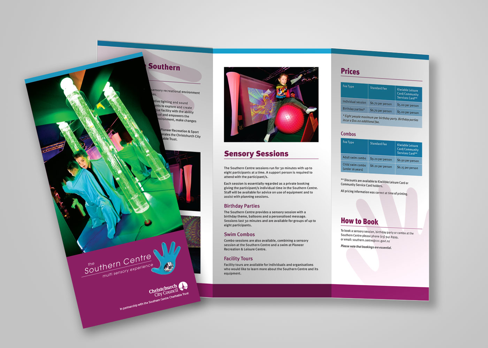
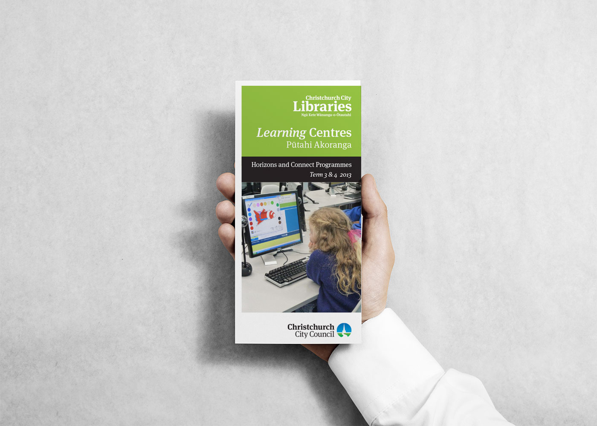
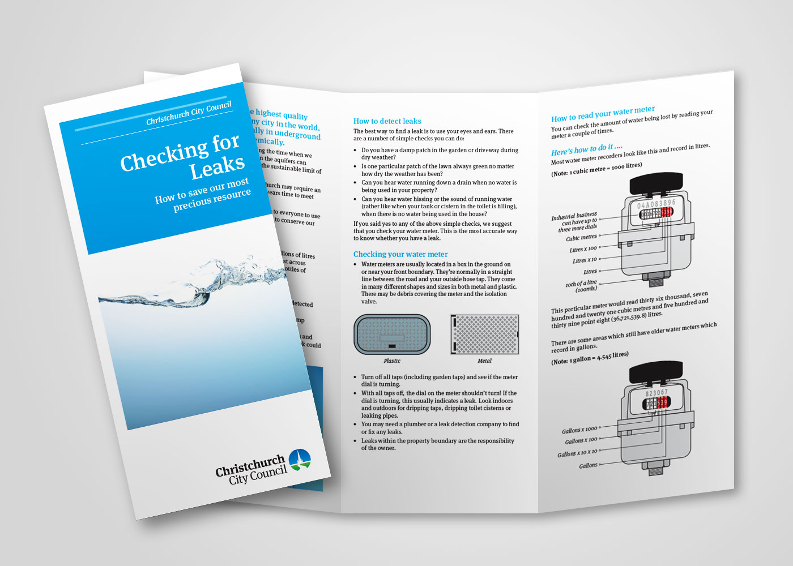

Graphic design · Print
Christchurch City Council — Community Brochures
A suite of public information brochures for Christchurch City Council, covering libraries, recreation centres, and infrastructure. Each piece works within the Council's existing brand guidelines, with the challenge being to make dense, functional content feel clear and approachable.